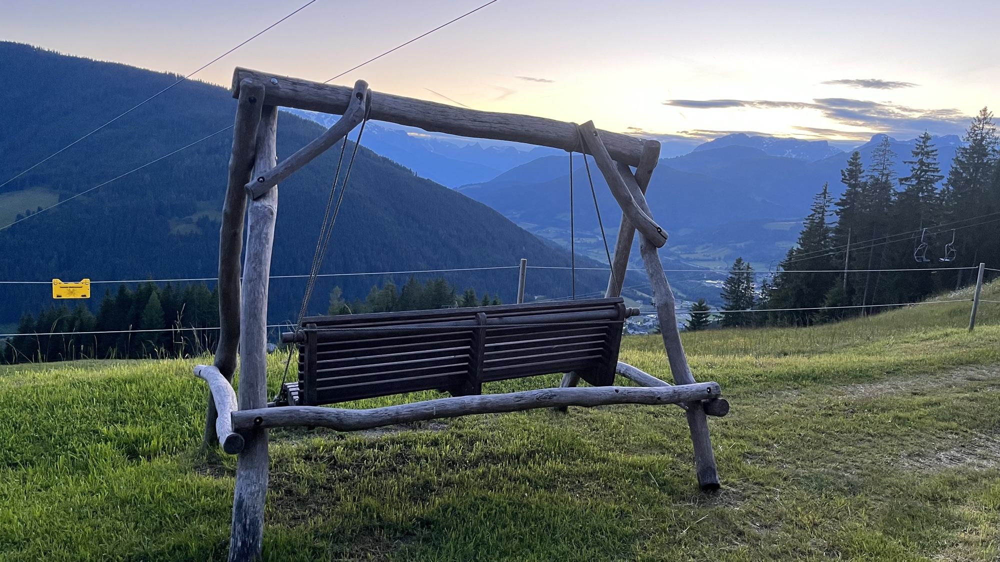

Why Otium
Poised for growth

American demand for European travel has grown substantially in recent years, and more importantly, spending has grown even faster. Transatlantic travel returned to pre-pandemic levels by 2024, with American visitor volume climbing steadily. Switzerland alone saw a 14% rise in stays from American travelers that year, part of a broader 2.6% increase in overnight stays nationally. That momentum carried into 2025, when summer travel from the US grew another 10% year-over-year, and spending accelerated even faster than arrivals in several markets. American tourist spending in Greece surged 64.7% year-over-year in June 2025 alone, outpacing every other nationality's growth rate that month. The travelers booking today are spending disproportionately more per trip, a signal that the American traveler market is becoming increasingly high-value. For independent properties, this is the moment to build visibility with this audience, before more competitors recognize the same shift.